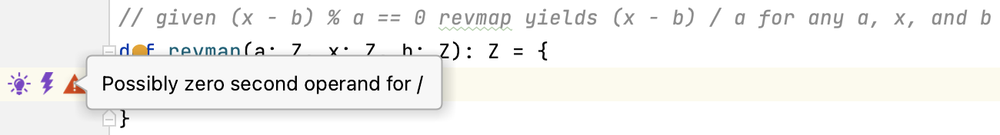
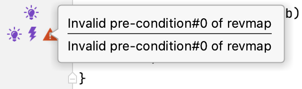
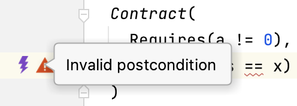
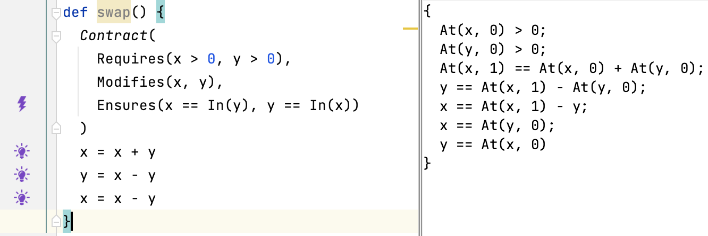
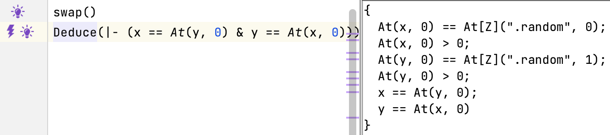
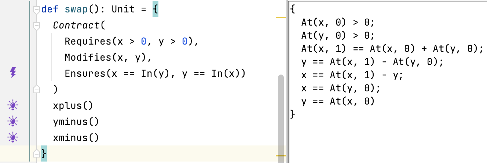

Lecture Summary: Contracts Proof
Slang Functions and Contracts
A Proof From Linear Algebra
|
|
The listing above shows three incompletely implemented functions linmap, revmap, and compose.
Suggested implementations are provided in the comments.
Let’s implement the functions step by step.
A Proof From Linear Algebra (linmap)
|
|
The implementation of linmap is easiest.
We can simply copy the expression from the comment into a return statement.
Let’s leave it there for now.
A Proof From Linear Algebra (revamp)
|
|
The implementation of revmap does not look challenging either.
Variable a referred to in the return statement might be zero.
We must add a requires clause to ensure the second operand of / is not zero.
|
|
|
|

In fact we should also add (x - b) % a == 0 there as stated in the comment.
|
|
That’s it for now. Let’s turn to function compose.
A Proof From Linear Algebra (compose)
|
|
- Observe,
z == linmap(a, x, b) && y == revmap(a, z, b) - implies
z == a * x + b && y == (z - b) / a - implies
y == (a * x + b - b) / a - implies
y == (a * x) / a - implies
y == x - So, the missing function call is
revmap(a, y, b)
|
|
There’s a problem with function compose.
The pre-condition a != 0 of function revmap is not met.
Because a is not modified in the function body, a != 0 can only be enforced by a pre-condition.
We need to add a contract with the corresponding requires clause.

|
|
There’s a problem with function compose.
The pre-condition a != 0 of function revmap is not met
Because a is not modified in the function body, a != 0 can only be enforced by a pre-condition.
We need to add a contract with the corresponding requires clause.
|
|
There’s another problem with function compose!
The pre-condition (At(y, 0) - b) % a == 0 of function revmap is not met.
(We’ve replaced x by At(y, 0) in the pre-condition according to the actual parameters.)
Because y is assigned in var y: Z = linmap(a, x, b), the pre-condition will have to established by the result of function linmap.
However, function linmap does not specify a post-condition.
We need to add a contract with the corresponding ensures clause to linmap.
The post-condition At(y, 0) == a * x + b implies the pre-condition (At(y, 0) - b) % a == 0 of revmap.
Now let’s add the post-condition Res == x to compose.

|
|
We can’t verify the function. The postcondition is invalid!
We don’t have enough information to prove it.
We’ve reasoned informally above that the postcondition should be true.
However, we’ve not specified a postcondition for revmap yet.
Let’s do this.
Now it’s proved!
We can summarise and document our reasoning in Slang by providing deduce commands (relying on the contracts).


A Proof From Linear Algebra (Summary)
|
|
|
|
Exercise 1
Provide functions linmap_spec, revmap_spec and compose_spec completing the Slang program below where x == compose_spec(a, x, b).
|
|
|
|
Exercise 2
Provide a function inverse with signature.
def inverse(a: Z, x: Z, b: Z) (No return value!)
that ensures:
revmap_spec(a, linmap_spec(a, x, b), b) == x
Aside. This function corresponds to a mathematical theorem in Slang
Slang Functions and Frames
Example: Mutable Swapping with Frames
Recall the mutable swapping program.
|
|
We’ve replaced the final assert statement with a Deduce command.
Our intention is to prove this property of the swap program.
Recall the mutable swapping program.
|
|
We’ve replaced the final assert statement with a Deduce command.
Our intention is to prove this property of the swap program.
Using what we’ve learned about programs and facts, we can express this without using variables m and n.
The simplifies the mutable swapping program
|
|
For the sake of this example let’s restrict the values of the variables to positive integers.
Now, our example program looks as follows.
|
|
With our example program in place, let’s focus on the three assignments.
They contain different assignments to variables x and y.
|
|
We’re interested in the contracts governing these assignments. Each of them:
- modifies a variable
- has a post-condition
- (and, possibly, a pre-condition depending on the expression on its right-hand side)
Let’s consider one assignment after the other.
|
|
|
|
The first assignment modifies x.
The value At(x, 0) stems from the initial assignment.
|
|
The second assignment modifies y.
The value At(y, 0) stems from the initial assignment.
|
|
The first assignment modifies x.
The value At(x, 1) stems from the indicated assignment.
Statements and Contracts
Not only assignments have contracts. Every Slang statement has a contract. As if each statement was a function with a contract specification. The contract reasoning for statements is built into Slang. Let’s make this explicit for the mutable swap program. We define a function for each assignment.
Example: Mutable Swapping with Frames
In a function contract we cannot refer to old values such as At(x, 0).
In a contract post-condition the old value is referred to In(x).
So, instead of writing
ensures x == At(x, 0) + y,
we write
ensures x == In(x) + y
|
|
We name the function for the first assignment xplus.
It encapsulates the assignment x = x + y with a contract.
|
|
We name the function for the second assignment yminus.
It encapsulates the assignment y = x - y with a contract.
We treat this similar to the way we have dealt with the first assignment.
The last assignment is a little different.
It refers to the “different” old value At(x, 1).
|
|
The old value At(x, 1) must be provided by the context in which function xminus is called.
This was already the case At(x, 0) and At(y, 0).
But now it becomes apparent that In(x) might refer to either depending on at which point in a program the function is called.
Instead of:
x = x + yy = x - yx = x - y
We can write:
xplus()yminus()xminus()
|
|
Example: Mutable Swapping Function
Suppose we have defined a mutable swapping function swapA.
|
|
We can replace the three assignments by the newly defined functions.
We get the function swapB.
|
|
It has the same functionality as function swapA.
Exercise 3
Prove
|
|
Where you insert the definition of swapA for ....
Prove that all intermediate values occurring in the body of function swapA are positive.
Exercise 4
Prove
|
|
Where you insert the definition of swapB and the supporting functions for ....
Prove that all intermediate values occurring in the body of function swapB are positive.
Slang Functions as Facts
Example: Mutable Swapping Function (SwapA)
Consider function swapA once more.
|
|
The fact corresponding to the three assignments is just like what we’ve seen before. We can look at it in Logika.
Example: Mutable Swapping Function (SwapA) as Fact
The fact for the function body of swapA is just as expected.
Identifying At(x, 0) with In(x) and At(y, 0) with In(y) it is easy to see how the post-condition is established.
This provides a view from the inside of the function.
From the outside it is seen in a function call to swapA.

From the outside only the contract of swapA is seen.
The post-condition x == In(y), y == In(x) of swapA provides directly the facts needed to prove the deduction.
The modifies clause Modifies(x, y) specifies which variables need to be renamed using the At-notation

Example: Mutable Swapping Function (SwapB)
Consider function swapB with the function calls in the body.
|
|
The contracts for the three functions called in the body model the assignments closely.
Example: Mutable Swapping Function (SwapB) as Fact
The fact for the function body of swapB is the same as swapA.
The contracts we’ve specified express the implicit contracts that govern assignments.
Seen from the outside by way of a call swapA and swapB are indistinguishable:
They have identical contracts.
We can regard functions like theorem where the body is a proof.
Using the theorem does not require knowledge of its proof.

Slang Functions and Symbolic Execution
Problems
Function calls pose several challenges concerning symbolic execution.
- Function parameters introduce new temporary variables
- The same parameter name may be used in different functions
- Functions may call other functions
- Functions may contain recursive calls
- Functions may be nested
- Function calls may be nested
In fact, some of these problem already appear when dealing with loops. We will deal with (1) and (2) disallowing (3) to (6) for now.
Variable Names
Consider function shift below.
|
|
The function has the parameters p, y and N
It refers to global variables q, x
We need to rename p, y and N, the other two remain unchanged.
Let’s prefix each of the three names with the name of the function shift_: shift_p, shift_y and shift_N
Consider function shift below.
|
|
As it were:
|
|
We symbolically execute the function
|
|
A call to the function now assigns values to the parameters
shift_p = ...
shift_y = ...
shift_N = ...
This approach does not generalise to arbitrary programs. Permitting (3) to (6) and (5) from slide (problem) makes this method unsound. Being unsound means that the symbolic execution would not describe the program behaviour accurately. We’re interested in sound symbolic execution that permits us to make predictions about program behaviour.
Initial Values of Global Variables
Consider function addy below.
|
|
To deal with the value !In(x) we introduce an implicit parameter addy_In(x).
The parameter addy_In(x) is assigned the value of variable x when the other parameters receive their value addy_In(x) = x
Return Values
Consider function add below
|
|
Because calls are not nested add may only occur in assignments z = add(x, y).
Symbolic execution of x + y is then simply subsumed by the assignment to z.
Symbolic Execution of the Program
Using function shift.
|
|
Let’s symbolically execute:
|
|
(x: X, q: Q, n: M), (PC: X + Q = M)
–
(x: X, q: Q, n: M, shift_p: 1, shift_y: 1, shift_N: 1, shift_In(x): X, shift_In(q): Q),
(PC: X + Q = M)
(x: X, q: Q, n: M, . . . ),
(PC: X + Q = M, X * 1 + 1 * Q = M)
(x: X - 1, q: Q, n: M, . . . ),
(PC: X + Q = M, X * 1 + 1 * Q = M)
(x: X - 1, q: Q + 1, n: M, . . . ),
(PC: X + Q = M, X * 1 + 1 * Q = M)
(x: X - 1, q: Q + 1, n: M, . . . ),
(PC: X + Q = M, X * 1 + 1 * Q = M,
(X - 1) * 1 + 1 * (Q + 1) = M)
–
(x: X - 1, q: Q + 1, n: M, . . . ),
(PC: X + Q = M, X * 1 + 1 * Q = M,
(X - 1) * 1 + 1 * (Q + 1) = M,
Exercise 5
Using
|
|
Symbolically execute
|
|
Summary
- We have looked at Slang functions in more detail
- We have focussed on the notion on contract and proof
- Considering assignments as a starting point we’ve analysed frames
- We’ve looked at symbolic execution of a simplified version of Slang